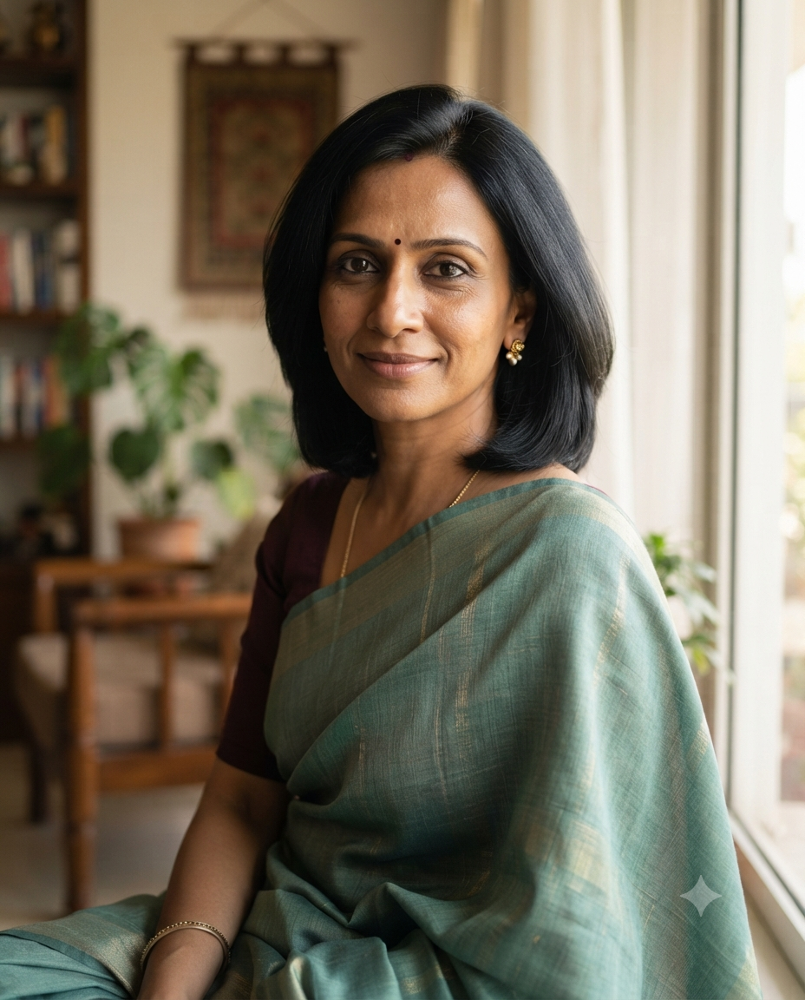
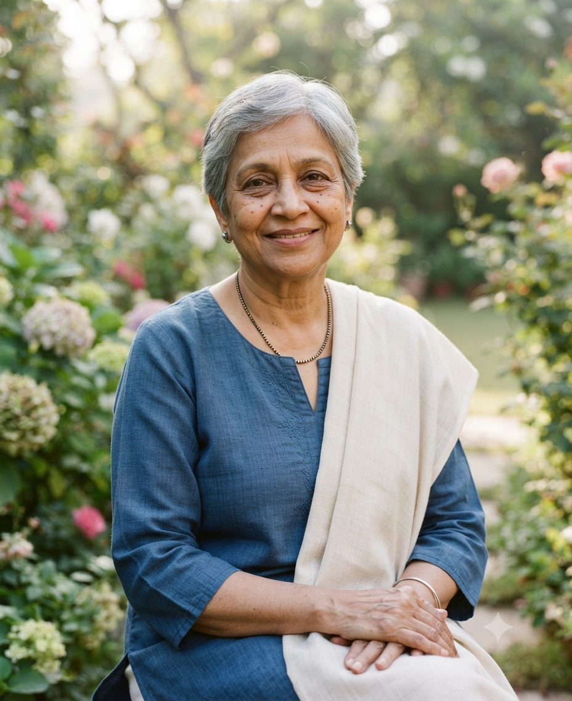

Ananya Nair
15 years · Ovarian cancer
HER VOICE · HER JOURNEY
Behind every diagnosis is a woman with her own story, experiences, challenges and hopes. Her Voice is a space dedicated to recognising the journeys of women who have completed active cancer treatment.
Their experiences remind us that life after treatment is also a journey — one that deserves understanding, support and a place to be heard.
MORE THAN A DIAGNOSIS
Cancer can change many parts of life, but it does not define the entirety of a woman's identity. Behind the medical appointments and treatment experiences are individual stories of family, friendships, education, careers, uncertainty and new beginnings.
Her Voice aims to create a space where these experiences can be explored, understood and acknowledged. No two journeys are identical, and every woman's experience deserves to be respected.
Showing 6 of 6 survivor stories
15 years · Ovarian cancer

20 years · Ovarian cancer
32 years · Breast cancer

41 years · Ovarian cancer

48 years · Breast cancer

63 years · Ovarian cancer
Try selecting a different age group or cancer type to explore the available survivor stories.
YOUR VOICE MATTERS
Every survivor's experience is unique. Your story may help someone feel understood, less alone or more confident in seeking support.
If you are a cancer survivor and would like to share your journey with UNMUTE, you are welcome to contact us. We would be glad to hear from you.
BECAUSE EVERY VOICE MATTERS
Listening to survivors means recognising not just what they have been through, but who they are beyond it. Their experiences deserve to be heard with empathy, respect and understanding.
Her Voice will continue to grow, with more cancer types and survivor stories being added in the future.